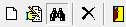
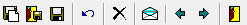

import time import datetime import os, sys from sikuli import * from random import* import Uteis reload(Uteis) import Gerador reload(Gerador) def inclusao(): dataInicio = time.time() click(Pattern().similar(0.90)) wait(3) while not exists(): print "[LOG] Aguardando abertura da tela ..." wait(1) type('n', KeyModifier.CTRL) while not exists(): print "[LOG] Aguardando abertura da tela ..." wait(1) strNomeIntrutor = Gerador.nome() paste(strNomeIntrutor) Uteis.tabOrder(2,2) paste(str(randint(100000, 999999))) Uteis.tabOrder(1,2) #[1]C | [2]D | [3]E Uteis.dropDown(choice([1,2,3]),2) Uteis.tabOrder(1,2) #[1]"JM ASL" | [2]"JM ASL/AFF" | [3]"I ASL" | [4]"I ASL/AFF" Uteis.dropDown(choice([1,2,3,4]),2) Uteis.tabOrder(1,5) paste(Gerador.telefoneFixo()) Uteis.tabOrder(1,2) paste(Gerador.celular()) Uteis.tabOrder(1,2) paste(Gerador.email(strNomeIntrutor)) Uteis.tabOrder(1,2) paste("Nota cadastro instrutores") wait(2) type('f', KeyModifier.CTRL) while exists(): print "[LOG] Aguardando abertura da tela ..." wait(1) Uteis.fechaTela() wait(5) return Uteis.delta(dataInicio, time.time())